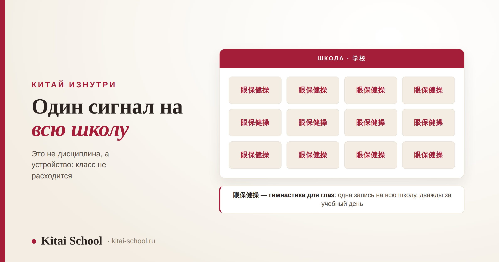
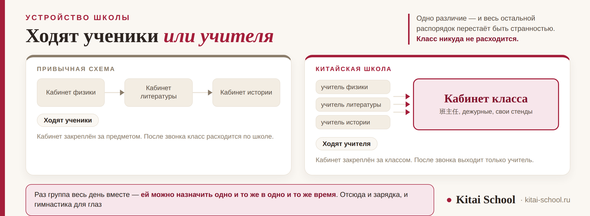

Китай изнутри
Факты о китайских школах: общий распорядок, гимнастика для глаз и два экзамена, которые всё решают


Списки фактов о китайской школе обычно выглядят как набор странностей: тут зарядка всей школой, тут сон после обеда, тут массаж век под музыку. По отдельности это и правда похоже на курьёзы. Но у всего перечисленного одна общая причина, и если её назвать, странности превращаются в устройство. Причина простая: класс в китайской школе — это постоянная группа со своим кабинетом, а не строчка в расписании. Дальше почти всё вытекает само.
Ходят по школе не ученики, а учителя: кабинет закреплён за классом, и группа весь день вместе. Поэтому возможен общий распорядок — зарядка, гимнастика для глаз 眼保健操 дважды в день, дежурные, которые сами убирают класс. Конкуренция сосредоточена в двух точках, а не размазана по всем годам: экзамен после девятого класса и экзамен в конце старшей школы. И важное против расхожего образа: с 2021 года государство само сокращает нагрузку — это политика «двойного сокращения». А ещё Китай большой, и школы в нём разные.
Что делают всей школой сразу
Три вещи, которые происходят по общему сигналу и в одну минуту во всех кабинетах. Именно они и попадают в списки удивительного.
| Что | По-китайски | Как это устроено |
|---|---|---|
| Зарядка на большой перемене | 课间操 | выходят во двор классами, под общую музыку; в некоторых школах это 广播体操 — комплекс под запись |
| Гимнастика для глаз | 眼保健操 | прямо за партами, под общую запись: массируют точки вокруг глаз и виски. Обычно дважды за учебный день |
| Поднятие флага | 升旗仪式 | чаще всего по понедельникам, всей школой во дворе, с речью и построением |
Гимнастика для глаз удивляет сильнее всего, но логика у неё прямая: нагрузка на зрение в школе большая, и перерыв не оставили на усмотрение каждого, а встроили в расписание. Как и многое другое в китайской школе — это решение на уровне распорядка, а не на уровне доброй воли.
Про дневной отдых отдельно, потому что его чаще всего пересказывают неточно. В школе это 午休 — длинный перерыв в середине дня. В начальной школе детям обычно дают поспать, дальше это скорее время отдыха: можно положить голову на парту, можно выйти. А вот обязательный сон для всех — это черта детского сада, где 午睡 действительно часть режима; как устроен день в саду, разобрано отдельно в статье про детский сад в Китае.
Мысль, из которой следует остальное
В российской школе кабинет принадлежит предмету: есть кабинет физики, кабинет литературы, и между ними перемещаются ученики. В китайской школе наоборот — кабинет принадлежит классу. Тридцать с лишним человек сидят в одном помещении весь день, а учителя-предметники приходят к ним по очереди.
Из этого вытекает больше, чем кажется на первый взгляд.
| Следствие | Как это выглядит |
|---|---|
| Общий распорядок возможен в принципе | если группа весь день вместе, ей можно назначить одно и то же в одно и то же время |
| У класса есть хозяин помещения | 值日生 — дежурные ученики, которые сами убирают кабинет; это не наказание, а очередь |
| Классный руководитель — главная фигура | 班主任 ведёт класс годами и отвечает почти за всё: от успеваемости до связи с родителями |
| Класс — это среда, а не список | у него есть свой уголок, свои стенды, свои общие дела и своя репутация в школе |

Роль 班主任 стоит отдельного упоминания, потому что аналога у неё нет. Это не «учитель, который ведёт классный час»: он знает домашнюю ситуацию каждого, общается с родителями почти ежедневно и во многом определяет, как класс живёт. К нему же идут с любым вопросом — от ссоры на перемене до выбора направления после девятого класса.
Когда я впервые попала в китайскую школу на урок, меня сбило с толку не расписание и не дисциплина, а мелочь: прозвенел звонок, учитель вышел, а класс остался сидеть. Никто не побежал в коридор с рюкзаком. Я сначала решила, что у них просто окно.
Потом поняла, что смотрю на всё не с той стороны. Я искала знакомую картинку — поток людей между кабинетами — а её там нет и быть не может. Класс никуда не идёт, потому что он уже дома: это его комната, с его стендами и его дежурными.
С тех пор, когда меня спрашивают про китайскую школу, я начинаю не с фактов, а с этого. Иначе получается список курьёзов, из которого ничего не понятно. А стоит назвать устройство — и зарядка, и гимнастика для глаз, и уборка своими силами перестают быть странностями.
Двенадцать лет и два экзамена
Школьный путь делится на три ступени, а конкуренция сосредоточена в двух точках. Это важное уточнение к образу «культа экзамена»: давление не размазано ровным слоем по всем годам, оно собрано в двух местах.
| Ступень | По-китайски | Сколько | Чем заканчивается |
|---|---|---|---|
| Начальная школа | 小学 | шесть лет | переход в среднюю |
| Средняя школа | 初中 | три года | экзамен 中考: по его итогам распределяют в старшую школу или в профессиональное образование |
| Старшая школа | 高中 | три года | экзамен 高考, гаокао: по его результатам поступают в вузы |
Первые девять лет — начальная и средняя школа — это обязательное образование 义务教育. Старшая школа в него уже не входит, и именно поэтому экзамен после девятого класса такой значимый: он решает не «в какой класс», а по какой дороге пойдёт человек дальше. Куда ведёт вторая дорога, разобрано в статье про то, есть ли в Китае колледжи.
Про гаокао стоит знать одну вещь, которая редко попадает в пересказы: единого расписания на всю страну нет. Экзамен проводят обычно в начале июня, но набор предметов, продолжительность и порядок различаются по провинциям. Поэтому любые «точные» описания гаокао вообще — это описания какой-то одной провинции. И отдельно для российских читателей: иностранных абитуриентов гаокао не касается, они поступают по своей линии приёма — это разобрано в статье про поступление в Китай без ЕГЭ.
Что государство само поменяло
Образ китайской школы как места бесконечной зубрёжки устойчив, но он описывает картину, которую в стране как раз пытаются изменить — и это самая свежая часть темы.
В 2021 году приняли политику, которую называют 双减 — «двойное сокращение». Сокращают по двум направлениям сразу: объём домашних заданий и коммерческое репетиторство по школьным предметам. То есть государство признало, что нагрузка выросла чрезмерно, и стало её ограничивать административно.
Для читателя отсюда два вывода. Первый: описания китайской школы старше 2021 года нужно читать с поправкой — часть из них описывает порядок, которого уже нет. Второй: сами китайские родители нагрузку считают проблемой, а не поводом для гордости. Представление «там все счастливо зубрят» — это взгляд снаружи.
Что ещё бросается в глаза
Несколько деталей, которые не складываются в отдельный раздел, но встречаются почти везде.
| Что | Подробность |
|---|---|
| Форма 校服 | чаще спортивного кроя и одинаковая для всех, а не пиджаки; носят каждый день |
| Вечерняя самоподготовка 晚自习 | в старшей школе часто остаются заниматься в школе после уроков, под присмотром |
| Учебный год | начинается в сентябре, делится на два семестра; длинные каникулы — летние и зимние, вокруг Нового года по лунному календарю |
| Понедельник | день с линейкой; про то, как в китайском устроены сами названия дней недели, есть отдельный разбор |
Про названия дней недели — это не шутка и правда любопытно: они образованы по номерам, и понедельник буквально «неделя один». Разобрано в статье про дни недели в Китае.
Что из этого пригодится родителю
Практическая часть, короткая. Российских родителей китайская школа обычно интересует не как экзотика, а по делу.
| Вопрос | Короткий ответ |
|---|---|
| Отдать ребёнка в китайскую школу | обычная государственная школа рассчитана на местных; для иностранных семей это чаще международные или частные школы, и живут они по другим правилам |
| Учить китайский со школьного возраста | это делается и без переезда; маршрут по возрастам и экзаменам разобран отдельно |
| Поступать в китайский вуз | гаокао иностранцу не нужен, линия приёма своя, и готовиться к ней начинают заранее |
| Съездить на программу | языковые программы существуют отдельно от школьной системы, со своими сроками и визами |
И главная оговорка ко всему тексту: Китай большой, и школы в нём разные. Городская школа в крупном центре и сельская различаются по оснащению, нагрузке и тому, насколько строго соблюдается распорядок. Всё описанное здесь — про типичную городскую государственную школу. Частные и международные школы живут по своим правилам.
Частые вопросы (FAQ)
Правда ли, что в китайских школах есть дневной сон?
В школе это называется 午休 — перерыв в середине дня. Он длиннее российской перемены, и в начальной школе детям обычно дают поспать; в средней и старшей это чаще просто время отдыха, когда можно положить голову на парту. Обязательный сон для всех — это черта детского сада, а не школы: там 午睡 действительно часть распорядка. В школе перерыв остаётся, а сон из обязательного становится возможным.
Что такое гимнастика для глаз в китайской школе?
眼保健操 — короткий комплекс, который делают под общую запись прямо за партами: массируют точки вокруг глаз и виски. Обычно это происходит дважды за учебный день и занимает несколько минут. Для российского человека это самая неожиданная деталь китайской школы, но логика простая: нагрузка на зрение большая, и перерыв встроили в расписание, а не оставили на усмотрение каждого.
Почему в китайской школе кабинет закреплён за классом?
Потому что класс там — постоянная группа, а не список в журнале. У него есть свой кабинет, свой классный руководитель, свои дежурные, которые убирают помещение, и общие дела вроде зарядки и линейки. Учителя-предметники приходят к классу, а не класс идёт к ним. Из этого устройства вытекает почти всё остальное, что удивляет со стороны: общий распорядок возможен ровно потому, что группа весь день вместе.
Какие экзамены сдают китайские школьники?
Два, и они делят путь на части. 中考 сдают после девятого класса: по его итогам распределяют в старшую школу 高中 или в среднее профессиональное образование. 高考 сдают в конце старшей школы, обычно в начале июня, и по его результатам поступают в вузы. Набор предметов, продолжительность и порядок проведения различаются по провинциям, так что единого расписания на всю страну нет.
Что такое политика двойного сокращения?
双减, принятая в 2021 году, — это меры по снижению школьной нагрузки сразу по двум направлениям: сокращение объёма домашних заданий и ограничение коммерческого репетиторства по школьным предметам. То есть государство само признало, что нагрузка выросла чрезмерно, и стало её ограничивать. Это важно знать, потому что представление о китайской школе как о месте бесконечной зубрёжки описывает картину, которую в стране как раз пытаются изменить.
Все ли китайские школы устроены одинаково?
Нет, и это стоит держать в голове при чтении любых списков фактов. Китай большой, и городская школа в крупном центре и сельская школа различаются заметно — по оснащению, по нагрузке, по тому, насколько строго соблюдается распорядок. Всё, что описано здесь, относится к типичной городской государственной школе. Частные и международные школы живут по своим правилам и часто ближе к западной модели.
Хотите, чтобы ребёнок учил китайский без переезда в Китай? На диагностическом занятии посмотрим возраст, интерес и цель и предложим маршрут — от первых слов до экзамена. Оставить заявку или написать в Telegram.
Дальше по теме: дошкольная ступень — детский сад в Китае; вторая дорога после девятого класса — есть ли в Китае колледжи; маршрут для ребёнка по возрастам — китайский язык для детей; самые маленькие — китайский для малышей; детский экзамен — экзамен YCT; поступление иностранца — поступление в Китай без ЕГЭ и бакалавриат в Китае; поездка на программу — языковые курсы в Китае; как обращаться и вести себя — китайский этикет общения; любопытное про язык — интересные факты о китайском языке.
Источники
- Практика Kitai School — работа с семьями, чьи дети учатся или учились в китайских школах, и собственные наблюдения в школах КНР.
- Структура школьного образования КНР: начальная школа, средняя и старшая ступени, девятилетнее обязательное образование.
- Политика «двойного сокращения» (双减), принятая в 2021 году: сокращение домашних заданий и ограничение коммерческого репетиторства по школьным предметам.
Пусть учёба будет в радость! 学而不厌！